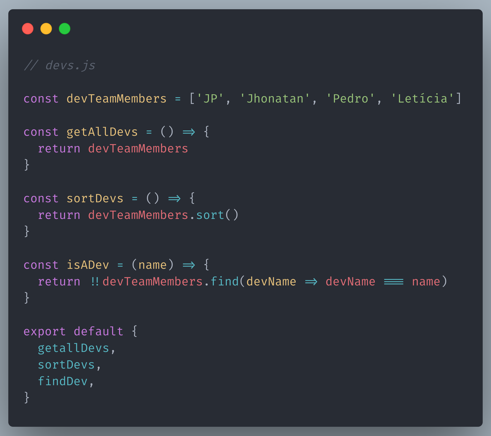
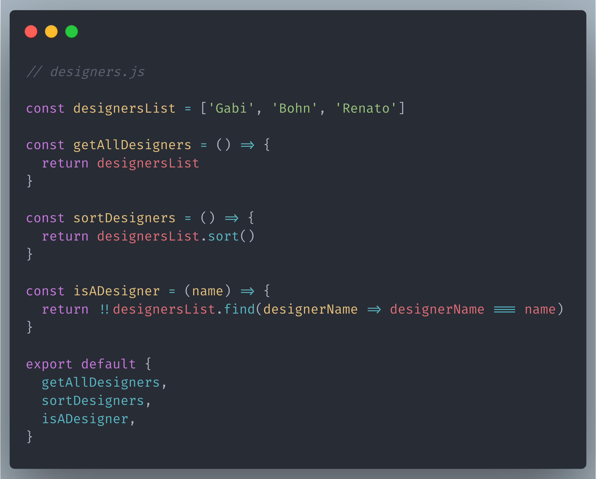
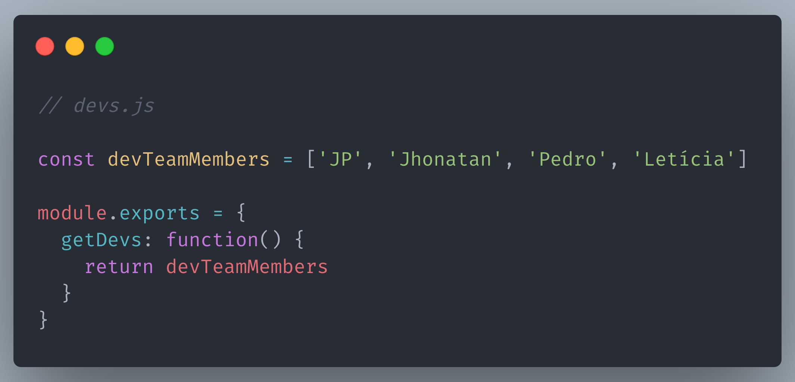

Why you should use ES modules?
Hi! My name is João Paulo.
But you can call me JP 🤙
Front end developer at Grupo Globo
One of the maintainers of Clappr
I really love Rio Carnival
What is modularity?
"The concept of modularity is used primarily to reduce complexity by breaking a system into varying degrees of interdependence and independence across and "hide the complexity of each part behind an abstraction and interface."
Baldwin, C.Y.; Clark, K.B. (2000). "Chapter 3: What Is Modularity?" - Design Rules: The power of modularity
It's not a niche topic ... and not a new thing too.
"Hmm, give me more ..."

Benefits to using ES modules
Reusability
Modules maximize code reusability, since one module can be imported by another module.
Composability
Modules explicitly define their imports and exports. So, they can be easily composed.
Isolation
Allows multiple people to work individually in on project while not bottle-necking each other. Also if one of the modules breaks, instead of replacing the whole project, you just have to replace the individual module that broke.
Organization
A benefit already linked to the use of modules is the fact that the code has a much better organization, since we can create modules with unique responsibilities.
"But we can apply modularity with another solutions instead ES Modules"
CommonJS
- It's not the official spec of modules for JS
- It's not supported by Browsers
- Load modules synchronously
- (currently, exists one compliance implementation of CommonJS in AMD)
"But we can use a module bundler"
Module bundler


There one little trick here ...
"Tree shaking is a term commonly used within a JavaScript context to describe the removal of dead code."
MDN Web Docs Glossary: Definitions of Web-related terms - Tree shaking
625KB
40B
The use of tree shaking is much more difficult for dynamic cases and in some cases, it becomes impraticable.
"Okay, but and for the server side?"
See More:
- Medium - How Tree-shaking in JavaScript Bundlers work
- Web.dev - Reduce JavaScript Payloads with Tree Shaking
- RequireJS - Docs
- Wikipedia - CommonJS
- Web.dev - How CommonJS is making your bundles larger
- Webpack - Tree Shaking
- Medium - Announcing core Node.js support for ECMAScript modules
- Node.js Docs - Modules: ECMAScript modules
And More:
- Mozilla Hacks - ES6 In Depth: Modules
- Mozilla Hacks - ES modules: A cartoon deep-dive
- V8 Blog - JavaScript modules
- Rollup Wiki - ES6 Modules
- freeCodeCamp - A Practical guide to ES6 modules
- MDN - JavaScript modules
- Exploring JS - Chapter 16: Modules
- JavaScript for impatient programmers - Chapter 20: Modules
- Eloquent Javascript - Chapter 10: Modules
- ECMAScript® 2015 Language Specification - Topic 15: Scripts and Modules